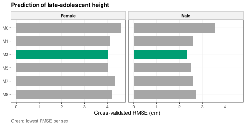
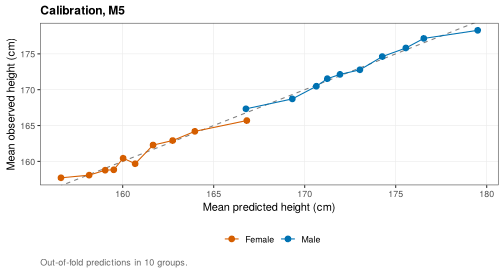
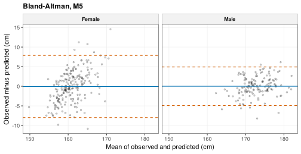
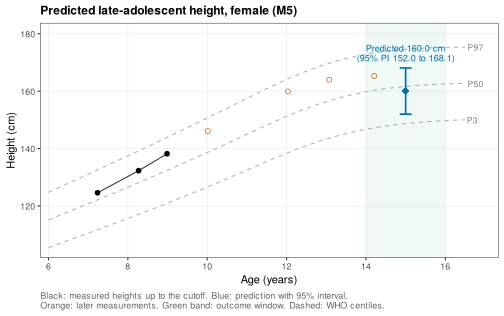
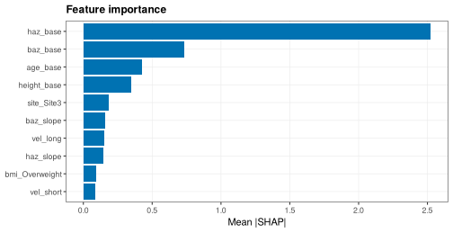
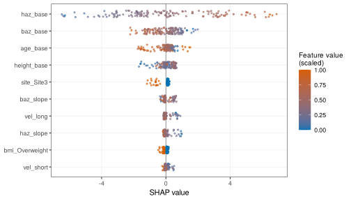
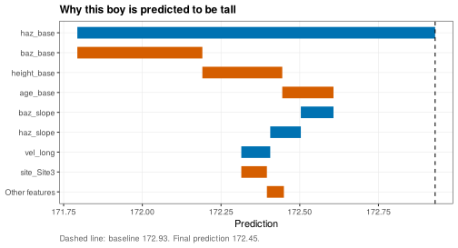
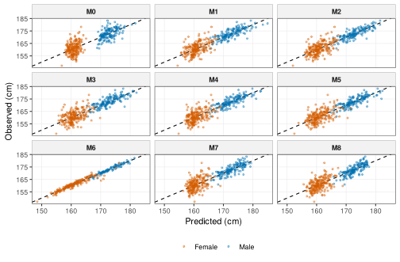
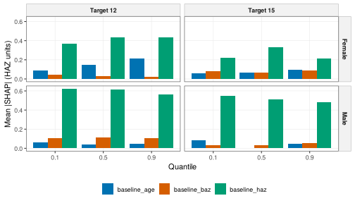

Predicting late-adolescent height and explaining predictions
Source:vignettes/prediction.Rmd
prediction.RmdAbout this vignette. All data are simulated with
wgh_simulate(). The results show how the methods work and resemble the published patterns, but they are not the published findings and are not research results. The functions run in development mode: SITAR models use at most 1,000 children, the benchmark uses 5-fold cross-validation and the prediction cohort has a few hundred children, so model rankings are illustrative.
Parents and clinicians often ask how tall a child will be. A prediction is useful only if it is accurate for new children, if it comes with an honest statement of uncertainty, and if one can see why the model predicts what it does. This vignette walks through all three, reproducing two studies of the research program:
- predicting late-adolescent height from prepubertal growth (Ho 2026) [1], and
- explaining individual growth predictions across the growth distribution (Ho 2026) [2].
The steps are: build a cohort of features and outcomes, compare models on the same cross-validation folds, check calibration and agreement, attach prediction intervals, show a prediction for one child, explain it, and finally run the flows. The vignette is precomputed.
Prediction needs children measured both before puberty and in late
adolescence, so this vignette uses a simulated cohort followed for 14
school years with little dropout (see
vignette("simulated-data") for the settings).
library(WeGrowHealthR)
wgh_config("dev")
#> WeGrowHealthR run mode: dev
v <- wgh_simulate(8000, seed = 7, years = 2012:2025, missing_years = integer(),
dropout = c(intercept = -4, age = 0), entry_first_prob = 0.9)$visits1. What is predicted from what
The question is: from what we know about a child before puberty, how
tall will the child be in late adolescence?
wgh_prediction_cohort() builds one row per child:
- the baseline is the earliest visit at or before a
prepubertal cutoff (
cutoff, 11 years in boys and 9 years in girls, in completed years), - the features come only from visits up to the cutoff: baseline height, HAZ and BAZ, their categories, short- and long-term height velocity, the yearly slopes of BAZ and HAZ, a BMI trajectory class and birth year,
- the outcome
height_lateis the median height in a late-adolescent window (outcome_window, 16 to 18 years in boys and 14 to 16 in girls).
A check stops the function if any baseline falls inside the outcome window, so the outcome can never leak into the features.
pc <- wgh_prediction_cohort(v)
attr(pc, "attrition")
#> # A tibble: 6 x 3
#> step children pct
#> <chr> <int> <dbl>
#> 1 All children 5664 NA
#> 2 With a prepubertal visit 3963 NA
#> 3 With an outcome-window visit 358 NA
#> 4 Retained, Site1 NA 5.9
#> 5 Retained, Site2 NA 7.4
#> 6 Retained, Site3 NA 5.8
table(pc$sex)
#>
#> Male Female
#> 147 211
head(pc[, c("id", "sex", "age_base", "height_base", "haz_base", "baz_base", "vel_short", "baz_slope", "height_late")])
#> # A tibble: 6 x 9
#> id sex age_base height_base haz_base baz_base vel_short baz_slope height_late
#> <chr> <fct> <dbl> <dbl> <dbl> <dbl> <dbl> <dbl> <dbl>
#> 1 C000001 Female 8.45 138. 1.51 1.78 8.01 0.199 164.
#> 2 C000028 Male 10.7 140. -0.152 0.656 NA NA 173
#> 3 C000092 Male 10.5 143. 0.318 0.158 4.28 -0.617 177.
#> 4 C000096 Female 7.09 127. 0.992 0.985 6.61 0.0514 160.
#> 5 C000100 Male 9.66 130 -0.964 2.74 5.72 -0.351 168.
#> 6 C000127 Female 7.84 127. 0.218 2.08 8.58 -0.560 159.The attrition table shows how many children have a prepubertal visit and an outcome visit, and the share retained at each site. A site that loses many more children than the others would make the cohort unrepresentative.
wgh_table1(pc, vars = ..., by = "sex") describes the
cohort.
2. A fair comparison of models
wgh_benchmark() fits a ladder of models, from the
simplest to machine learning, and evaluates them all on the
same child-level folds, so the comparison is fair:
| Code | Model |
|---|---|
| M0 | Linear regression on baseline height only |
| M1 | Stepwise linear regression with categories |
| M2 | Stepwise linear regression with z-scores and velocities |
| M3 | Mixed model with an age spline |
| M4 | Generalised additive model |
| M5 | Mixed model with velocity and BAZ slope (the primary model of [1]) |
| M6 | M5 plus SITAR timing and intensity |
| M7 | Gradient boosting (XGBoost) |
| M8 | Random forest |
models chooses the models, folds the number
of folds (or folds = "site" for leave-one-site-out), and
site_effect whether site is a fixed or a random effect in
the linear models. Models are fitted separately for boys and girls.
Missing feature values are imputed with medians computed from the
training folds only.
bm <- wgh_benchmark(pc, models = c("M0", "M1", "M2", "M5", "M7", "M8"), folds = 5)
#> Warning in predict.lm(m, te): prediction from rank-deficient fit; attr(*, "non-estim") has doubtful
#> cases
bm
#> <wgh_benchmark>: 5-fold cross-validated performance (cm)
#> # A tibble: 12 x 8
#> sex model label n RMSE MAE R2 calibration_slope
#> <chr> <chr> <chr> <int> <dbl> <dbl> <dbl> <dbl>
#> 1 Male M0 OLS baseline height 147 3.57 2.77 0.294 0.97
#> 2 Male M1 OLS categorical, stepwise 147 2.6 2.04 0.625 0.908
#> 3 Male M2 OLS z-scores and velocity, stepwise 147 2.33 1.82 0.699 0.971
#> 4 Male M5 LMEM velocity and BAZ slope (primary) 147 2.50 1.92 0.654 0.945
#> 5 Male M7 XGBoost 147 2.60 2.03 0.626 1.04
#> 6 Male M8 Random forest 147 2.73 2.15 0.588 1.26
#> 7 Female M0 OLS baseline height 211 4.57 3.59 0.081 0.941
#> 8 Female M1 OLS categorical, stepwise 211 4.10 3.24 0.264 0.975
#> 9 Female M2 OLS z-scores and velocity, stepwise 211 4.01 3.15 0.294 0.976
#> 10 Female M5 LMEM velocity and BAZ slope (primary) 211 4.03 3.17 0.286 0.879
#> 11 Female M7 XGBoost 211 4.33 3.41 0.178 0.954
#> 12 Female M8 Random forest 211 4.20 3.32 0.225 0.982The table (also in bm$performance) gives, for each sex
and model, RMSE and MAE, the typical
prediction errors in cm, R2 the share of variance
explained, and calibration_slope the slope of observed on
predicted height (1 is ideal, below 1 means predictions are too
extreme). All values are out of fold: each child is predicted by a model
that never saw that child.
plot(bm)
Baseline height alone (M0) already explains much of the variation, because height tracks through childhood. Adding velocity, BMI and their changes (M2 and M5) reduces the error further. Gradient boosting and random forests do not clearly beat the linear models, a common finding when the relationships are close to linear, so the simpler, interpretable model is preferred. Prediction is harder in girls, whose baseline is earlier (up to 9 years) and whose pubertal timing varies more.
wgh_compare_models() tests whether two models differ,
with a paired bootstrap of their out-of-fold errors:
wgh_compare_models(bm, "M5", "M8", B = 500)
#> # A tibble: 2 x 9
#> sex comparison n rmse_diff rmse_lower rmse_upper mae_diff mae_lower mae_upper
#> <chr> <chr> <int> <dbl> <dbl> <dbl> <dbl> <dbl> <dbl>
#> 1 Male M5 minus M8 147 -0.229 -0.489 0.0211 -0.231 -0.442 0.00428
#> 2 Female M5 minus M8 211 -0.169 -0.449 0.0671 -0.149 -0.391 0.04133. Are the predictions right on average? Calibration and agreement
A model can have a small RMSE and still be biased for tall or short
children. wgh_plot_calibration() groups children by
predicted height and plots the mean observed against the mean predicted
height. Points on the diagonal mean the model is right on average across
the range.
wgh_plot_calibration(bm, "M5")
The Bland-Altman plot shows the error of each child against the size of the measurement. The solid line is the mean error (bias) and the dashed lines the 95% limits of agreement: 95% of children are predicted within these limits.
wgh_plot_bland_altman(bm, "M5", alpha = 0.2)
4. How sure is a prediction? Prediction intervals
A single number hides the uncertainty.
wgh_prediction_interval() gives a 95% prediction interval
for linear and mixed models, combining the uncertainty of the fitted
mean with the residual variance. The interval is for an individual
child, so it is much wider than a confidence interval for the mean.
For the children of a benchmark,
wgh_benchmark_intervals() applies it to the full-data fit
of a model and checks how many observed heights fall inside their
interval:
iv <- wgh_benchmark_intervals(bm, "M5")
head(iv)
#> # A tibble: 6 x 8
#> id sex observed fit lower upper width covered
#> <chr> <chr> <dbl> <dbl> <dbl> <dbl> <dbl> <lgl>
#> 1 C000028 Male 173 173. 169. 178. 9.28 TRUE
#> 2 C000092 Male 177. 177. 172. 182. 9.93 TRUE
#> 3 C000100 Male 168. 168. 163. 173. 9.89 TRUE
#> 4 C000199 Male 176 176. 171. 181. 9.61 TRUE
#> 5 C000370 Male 172. 172. 167. 177. 9.39 TRUE
#> 6 C000411 Male 176. 174. 169. 179. 9.33 TRUE
attr(iv, "summary")
#> # A tibble: 2 x 4
#> sex n mean_width coverage
#> <chr> <int> <dbl> <dbl>
#> 1 Female 211 16.0 0.972
#> 2 Male 147 9.57 0.966A coverage close to 0.95 means the intervals are honest. The mean
width, 10 cm in boys and 16 cm in girls, is the real uncertainty of
predicting late-adolescent height from prepubertal growth. For a single
fitted model, wgh_prediction_interval(model, newdata) does
the same.
5. Showing a prediction to a family or clinician
wgh_predict_child() predicts for one child described by
baseline features (features that are not supplied are filled with cohort
medians), and wgh_plot_child_prediction() shows the result
on a growth chart: the measured heights up to the cutoff, the predicted
late-adolescent height with its interval, and WHO centiles for context.
When later measurements are supplied, they show how the prediction
turned out.
several <- names(which(table(v$pid[v$age <= 9]) >= 3))
girls <- pc[pc$sex == "Female", ]
girl <- girls[girls$id %in% several, ][1, ]
wgh_predict_child(bm, girl, "M5")
#> # A tibble: 1 x 6
#> sex model fit lower upper width
#> <chr> <chr> <dbl> <dbl> <dbl> <dbl>
#> 1 Female M5 160. 152. 168. 16.1
wgh_plot_child_prediction(bm, girl, visits = v[v$pid == girl$id, ])
The chart answers the family’s question in a form they can read: where the child is now, where she is expected to be, and how wide the range of likely outcomes is. Placing the prediction among the WHO centiles shows whether the expected late-adolescent height is ordinary or unusual.
For a new child who is not in the cohort, give the features directly:
new_boy <- data.frame(sex = "Male", age_base = 9.5, height_base = 136, haz_base = 0.4,
baz_base = 1.2, vel_short = 5.8, baz_slope = 0.1)
wgh_predict_child(bm, new_boy, "M5")
#> # A tibble: 1 x 6
#> sex model fit lower upper width
#> <chr> <chr> <dbl> <dbl> <dbl> <dbl>
#> 1 Male M5 181. 175. 186. 11.56. Why this prediction? SHAP explanations
SHAP values split a prediction into contributions of each feature,
relative to the average prediction (the baseline). They add up exactly
to the prediction. wgh_shap() computes them for any model:
exactly for tree models (TreeSHAP) and linear models, and by kernel SHAP
otherwise, with bg_X as the background data.
Here we explain the gradient boosting model of boys (M7), which is
the kind of model that most needs explaining.
wgh_benchmark_shap() explains any model of a benchmark with
the same feature preparation as in the benchmark.
sh <- wgh_benchmark_shap(bm, "M7", "Male")
wgh_shap_summary(sh, B = 100)
#> # A tibble: 18 x 5
#> feature mean_abs_shap rank lower upper
#> <chr> <dbl> <dbl> <dbl> <dbl>
#> 1 haz_base 2.52 1 2.28 2.90
#> 2 baz_base 0.730 2 0.651 0.811
#> 3 age_base 0.424 3 0.350 0.500
#> 4 height_base 0.348 4 0.306 0.403
#> 5 site_Site3 0.187 5 0.150 0.217
#> 6 baz_slope 0.159 6 0.128 0.189
#> 7 vel_long 0.150 7 0.124 0.186
#> 8 haz_slope 0.143 8 0.119 0.189
#> 9 bmi_Overweight 0.0934 9 0.0832 0.108
#> 10 vel_short 0.0865 10 0.0725 0.102
#> # i 8 more rowsmean_abs_shap is the average size of each feature’s
contribution, with a bootstrap interval. Baseline HAZ dominates,
followed by baseline BAZ, age and height.
plot(sh, max_features = 10)
plot(sh, type = "beeswarm", max_features = 10)
In the beeswarm plot each point is a child. Points to the right raise the prediction and the colour shows whether the feature value was high or low. For baseline HAZ, high values (orange) push the prediction up: children who are tall for their age before puberty end up taller.
wgh_plot_waterfall() explains one prediction, step by
step from the baseline:
wgh_plot_waterfall(sh, row = 1, title = "Why this boy is predicted to be tall")
wgh_permutation_importance() is a model-agnostic check:
it measures how much the error grows when one feature is shuffled. When
it agrees with the SHAP ranking, the explanation is robust.
7. Explaining predictions across the distribution
The conditional growth references
(vignette("growth-distributions")) predict several
quantiles of later height-for-age for each child. The second study asked
whether the same features drive the median, the lower and the upper
predictions. For a linear quantile model with independent features, SHAP
values are exact and simple: the coefficient times the centred feature
value, with interaction terms shared equally between their features.
wgh_shap_interaction() computes them.
cp <- wgh_conditional_panel(v, window = c(5, 10), targets = 12)
z <- cp[cp$sex == "Female" & complete.cases(cp[, c("baseline_haz", "baseline_baz", "baseline_age")]), ]
q10 <- quantreg::rq(target ~ baseline_haz * baseline_baz + baseline_age, tau = 0.1, data = z)
q90 <- quantreg::rq(target ~ baseline_haz * baseline_baz + baseline_age, tau = 0.9, data = z)
s10 <- wgh_shap_interaction(coef(q10), z, z)
s90 <- wgh_shap_interaction(coef(q90), z, z)
rbind(q10 = colMeans(abs(s10$S)), q90 = colMeans(abs(s90$S)))
#> baseline_haz baseline_baz baseline_age
#> q10 0.3650404 0.04197381 0.08772003
#> q90 0.4353093 0.02445454 0.21324733Baseline HAZ dominates both quantiles, but baseline age contributes more to the upper prediction than to the lower one. The features shape the two ends of a child’s expected range differently, which a single mean model cannot show.
8. Both studies in one call each
wgh_flow_height_prediction() builds the cohort (joining
SITAR timing and intensity from the pubertal spurt flow, never size),
runs the full model ladder, leave-one-site-out validation, the M5
against M7 bootstrap, prediction intervals, calibration and Bland-Altman
plots, SHAP for M7 and an example individual prediction.
wgh_flow_explain_prediction() explains the conditional
reference models across quantiles, with permutation importance and the
stability of feature rankings across folds.
spurt <- wgh_flow_pubertal_spurt(v)
#> SITAR fitted to a random 1000 of 1433 children (run mode "dev").
#> SITAR fitted to a random 1000 of 1203 children (run mode "dev").
pred <- wgh_flow_height_prediction(v, spurt = spurt)
#> Warning in predict.lm(m, te): prediction from rank-deficient fit; attr(*, "non-estim") has doubtful
#> cases
#> Warning: M6 explains more than 90% of the variance.
#> i SITAR b and c were estimated with visits from the outcome window, so part of this performance is
#> leakage. Treat M6 as an upper bound.
pred
#>
#> -- Late-adolescent height prediction (Ho 2026, manuscript under review) --
#>
#> Tables (10): attrition, table1, cv_performance, apparent_performance, leave_one_site_out,
#> m5_vs_m7_bootstrap, m5_coefficients, prediction_intervals_m5, shap_importance_m7_boys,
#> example_prediction
#> Figures (6): fig_cv_rmse, fig_calibration_m5, fig_bland_altman_m5, fig_obs_pred_all,
#> fig_shap_beeswarm_m7_boys, fig_child_prediction
#> Models: benchmark, loso
#> Diagnostics: model_errors
#> Settings: mode = dev; cohort_n = 358
pred$tables$cv_performance
#> # A tibble: 18 x 8
#> sex model label n RMSE MAE R2 calibration_slope
#> <chr> <chr> <chr> <int> <dbl> <dbl> <dbl> <dbl>
#> 1 Male M0 OLS baseline height 147 3.57 2.77 0.294 0.970
#> 2 Male M1 OLS categorical, stepwise 147 2.60 2.04 0.625 0.908
#> 3 Male M2 OLS z-scores and velocity, stepwise 147 2.33 1.82 0.699 0.971
#> 4 Male M3 LMEM with splines 147 2.53 1.98 0.645 0.946
#> 5 Male M4 GAM 147 2.49 1.93 0.655 0.935
#> 6 Male M5 LMEM velocity and BAZ slope (primary) 147 2.50 1.92 0.654 0.945
#> 7 Male M6 LMEM with SITAR b and c 96 0.950 0.714 0.951 0.994
#> 8 Male M7 XGBoost 147 2.60 2.03 0.626 1.04
#> 9 Male M8 Random forest 147 2.73 2.15 0.588 1.26
#> 10 Female M0 OLS baseline height 211 4.57 3.59 0.0812 0.941
#> # i 8 more rows
pred$tables$prediction_intervals_m5
#> # A tibble: 2 x 4
#> sex n mean_width coverage
#> <chr> <int> <dbl> <dbl>
#> 1 Male 147 9.57 0.966
#> 2 Female 211 16.0 0.972
expl <- wgh_flow_explain_prediction(v)
expl$tables$rank_stability
#> # A tibble: 4 x 5
#> sex target scheme mean_spearman top_feature
#> <chr> <dbl> <chr> <dbl> <chr>
#> 1 Male 12 5 folds 1 baseline_haz
#> 2 Male 15 5 folds 1 baseline_haz
#> 3 Female 12 5 folds 1 baseline_haz
#> 4 Female 15 5 folds 0.7 baseline_haz
plot(pred, "fig_obs_pred_all", alpha = 0.3)
plot(expl, "fig_quantile_resolved")
Why this is useful
- For a child: a predicted height with an honest range, shown on a familiar chart, helps a clinician decide whether a child’s growth needs follow-up and helps families set realistic expectations.
- For research: a fair benchmark shows whether complex models add anything. Here they do not, which favours a transparent model that can be published as an equation.
- For trust: SHAP explanations show which features drive a prediction and confirm that the model behaves sensibly, for example that faster prepubertal growth predicts a taller adult.
References
Ho NT. Predicting late-adolescent height from prepubertal growth trajectories in Vietnamese schoolchildren. Manuscript under review. 2026.
Ho NT. Explainable individualized growth prediction: interpreting conditional height-for-age predictions across the growth distribution. Manuscript under review. 2026.